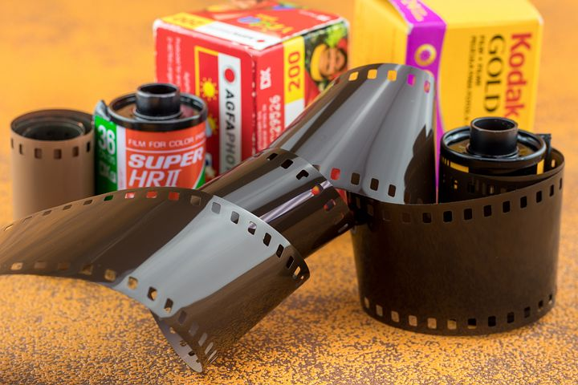

Films are regaining popularity in recent years, in HK there are also a considerable amount of film lovers and even professional film photographers. In response to this trend, there are also film stores in HK. However, there lack a mutual communication platform for film users and merchants to find each other. As an amateur film enthusiast, finding the right store in Hong Kong to develop film can be a problem for me, not to mention professional photographers who have a lot of film needs.
How should newcomers to film get started? How can Where is the nearest film store? What stores offer Kodak 200? which stores have the cheapest film scans? There is no platform that gather all the relative information. Most of the time customers must go through social media (Instagram or Red) again and again only to find an appropriate film store.
In response to this demand, I want to build an online platform that gather local film stores in HK (including their location, service, and price), as well as popular places for film taking. Meanwhile, I also want to build an online community for film lovers in HK, so that they can share film experience and even hang out to take films together.
